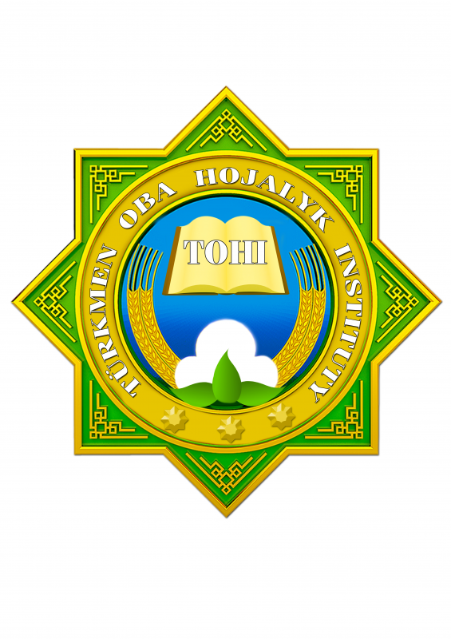

University Information
Location
Dashoguz, Tukmenistan
Founded
2011
Logo History

2011 (estimated) (Current)
The logo of the Turkmen Agricultural Institute is an eight-pointed green star, a symbol of Islam known as the Rub el Hizb. At its center, an open book signifies knowledge, surrounded by cotton bolls and sheaves of wheat. These elements represent Turkmenistan's key agricultural products and the institute's focus, while also echoing symbols from the nation's Soviet history. The institute's name is inscribed in Turkmen within the central circle.
Source: TOHI (Official Institute Website)